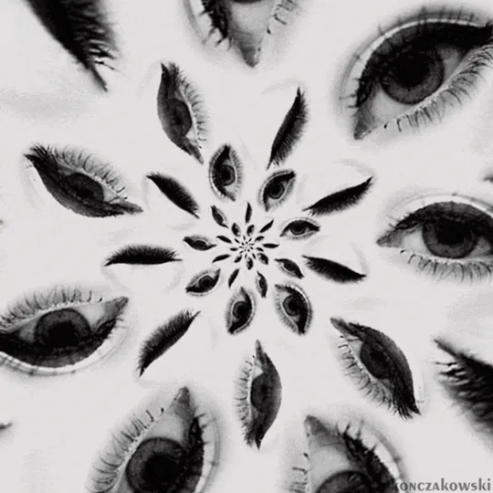

WE RULE THE CITY
Lusius viste a quienes cargan su propio mundo
Lusius es una casa independiente de streetwear en blanco y negro con base en Valencia. Nace del mito del titán que sostiene el cielo: ropa con peso, gráficos de carácter y una idea simple — nadie te regala nada. Descubre el primer drop y encuentra tu talla, de la S a la XL.

-
Primer drop
Cinco piezas en blanco y negro, diseñadas por Lusius en Valencia.
-
Devolución en 14 días
Si no es lo que esperabas, puedes desistir sin dar explicaciones. Cómo hacerlo
-
Garantía legal
Todas las prendas cuentan con la garantía legal de conformidad. Más información
Lookbook
En la calle
Noche, hormigón y grano analógico. Las primeras fotos llegan con el primer drop.
-
Look 01 · Próximamente -
Look 02 · Próximamente -
Look 03 · Próximamente -
Look 04 · Próximamente -
Look 05 · Próximamente -
Look 06 · Próximamente